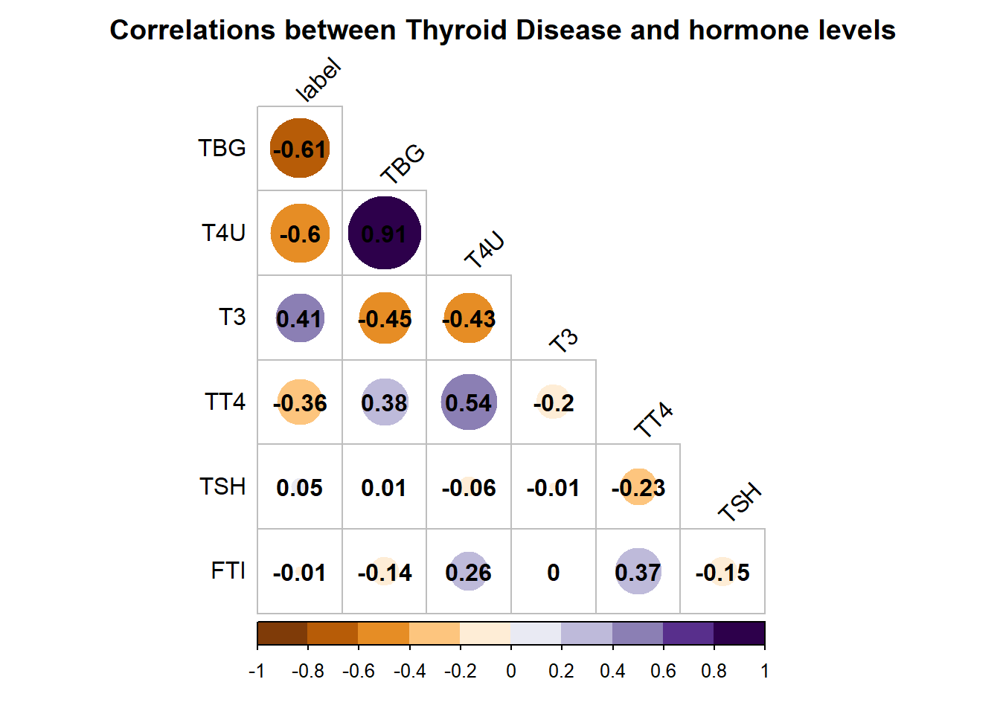

library(tidyverse)
library(skimr) # for EDA
library(corrplot) # for cool correlation graph
library(gt) # for tables
library(e1071) # for svm
library(caret) # for data split
thyroid <- read.csv("~/R Projects/SVM/thyroid.csv", header = TRUE)One Class SVM
R
R-code
Code-Along
Machine Learning
caret
SVM
Classifiers
One Class SVM for Imbalanced Classes
I’ve recently been playing around with classification models, specifically on data sets with a skewed class distribution. In imbalanced classification problems, one class occurs infrequently. The minority class is often the class of interest (think fraudulent transaction, positive disease diagnosis, or intruder detection). Sometimes these applications are framed as a two-class classification problem, but other times they are called anomaly, outlier, or novelty detection.
Imbalanced classification problems are tricky for a couple of reasons. Models can achieve high accuracy by classifying everything as the dominant class. You can somewhat mitigate this problem by choosing models based on other metrics, such as sensitivity. You can also downsample the data to balance the classes (which throws out a lot of data) or upsample the infrequent class using a technique like SMOTE or ROSE to create synthetic data points.
Collecting enough labeled data can also be expensive in highly imbalanced classes. Techniques like SMOTE won’t help if you only have 2 of a class in the dataset; the model needs “sufficient” data to learn from.
Another way to handle a minority class is to use a one-class classifier. One-class classifiers are one of the most widely used methods in anomaly detection because it does not require extensive labeled data for training. This method can either be semi-supervised, where only the normal (major) class is used for training, or unsupervised, where the method can handle anomalies in the training class. The one-class SVM is a popular implementation of one-class classifiers.
Here I’m going to use a toy dataset from Datacamp. They have told me that all datasets used in their courses can be used outside Datacamp.
I’m using some specialty packages here, specifically e1071 and caret for the machine learning.
Exploratory Data Analysis
The dataset explores thyroid disease as a function of thyroid hormone levels. I’m using a custom skim function to tailor the output. More info on that can be found here.
my_skim <- skim_with(numeric = sfl(p25 = NULL, p50 = NULL, p75 = NULL))
thyroid_skim <- my_skim(thyroid)
thyroid_skim %>%
select(-skim_type) %>%
gt() %>%
cols_label(n_missing = "# Missing", complete_rate = "Completeness",
numeric.mean = "Mean", numeric.sd = "Standard Deviation",
numeric.p0 = "Min", numeric.p100 = "Max",
numeric.hist = "Histogram") %>%
opt_stylize(style = 6, color = "blue", add_row_striping = TRUE) %>%
tab_header(title = "Summary of Variables in Thyroid") | Summary of Variables in Thyroid | |||||||
| skim_variable | # Missing | Completeness | Mean | Standard Deviation | Min | Max | Histogram |
|---|---|---|---|---|---|---|---|
| label | 0 | 1 | 0.0220000 | 0.1467567 | 0.000000 | 1.00000000 | ▇▁▁▁▁ |
| TSH | 0 | 1 | -0.6881938 | 0.4455654 | -4.532599 | -0.02173999 | ▁▁▁▃▇ |
| T3 | 0 | 1 | -6.5046015 | 1.3994315 | -9.268609 | -1.43659510 | ▅▇▇▁▁ |
| TT4 | 0 | 1 | -1.7235631 | 0.4421667 | -5.350910 | -0.37417607 | ▁▁▁▇▁ |
| T4U | 0 | 1 | -1.4666057 | 0.4495771 | -6.164484 | 0.00000000 | ▁▁▁▇▂ |
| FTI | 0 | 1 | -1.0093125 | 0.2522809 | -3.569533 | -0.17950862 | ▁▁▁▇▂ |
| TBG | 0 | 1 | -1.7932517 | 0.4318577 | -6.636603 | 0.00000000 | ▁▁▁▇▁ |
We see that the dataset is complete with no missing values. All data types are numeric. About 2% of the patients are diagnosed with thyroid disease.
I like to look at a correlation plot to get an overview of how the predictors relate to each other and the outcome. The correlation plot created by corrplot() has the title truncated in a lot of notebook/ markdown environments. The solution, which I found here, is to add a margin.
# examining correlation between variables categories
# moving the outcome to the first column to start
# will be sorted by decreasing correlation with outcome
thyroid %>%
dplyr::select(label, everything()) %>%
cor %>%
{.[order(abs(.[, 1]), decreasing = TRUE),
order(abs(.[, 1]), decreasing = TRUE)]} %>%
corrplot( type = 'lower', tl.col = 'black',
addCoef.col = 'black', cl.ratio = 0.2, tl.srt = 45,
col = COL2('PuOr', 10), diag = FALSE , mar = c(0,0,2,0),
title = " Correlations between Thyroid Disease and hormone levels")
Many of the features are strongly correlated with the outcome. So, we can expect to get reasonably decent results from our model.
Setting up for ML with caret
I’m using the e1071 package for SVM, which is not supported by tidymodels, so I will use caret as the wrapper for a lot of the machine modeling workflow. First, I’m going to make a train and test split. createDataPartition will stratify the sampling over the two classes if you pass it the vector of labels. Stratification is usually critical with an imbalanced dataset; you don’t want a scenario where the train or test dataset has most of the minority class observations.
# Relabel the classes to TRUE if it is normal data and FALSE if it is
# an anomaly. (That is, it is false that the outlier data is normal).
# makes it easier to compare with the output of the SVM model.
thyroid <- thyroid %>%
mutate(label = ifelse(label == 0, TRUE, FALSE))
# create data split for test and training
# will be split among strata
set.seed(2346)
inTrain <- createDataPartition(thyroid$label, p = 0.6, list = FALSE)
# formatting the data as required for svm()
train_predictors <- thyroid[inTrain, 2:7]
train_labels <- thyroid[inTrain, 1]
# Creating the test set
test <- thyroid[-inTrain,]
# formatting the data as required for svm()
test_predictors <- test[,2:7]
test_labels <- test[,1]
#double checking that the test and train sets do contain ~2% disease
# or rather 98% normal.
mean(train_labels)[1] 0.9767055mean(test_labels)[1] 0.9799499Two-class SVM
First, I’m going to fit the data with a traditional 2 class classifier. I’m using SVM for the classification. The option type ='C-classification' performs normal classification. I’m not going to get into the details of SVM here, but for more information check out this tutorial. I’m also not going to tune any hyper-parameters.
# fitting SVM on training data
two_class_svm_model <- svm(train_predictors, y = train_labels,
type = 'C-classification',
scale = TRUE,
kernel = "radial")
# now predicting both classes on train and test data
two_class_svm_predtrain <- predict(two_class_svm_model,train_predictors)
two_class_svm_predtest <- predict(two_class_svm_model,test_predictors)
# code below here will be provided
# seeing how well the model did
two_class_confTrain <- table(Predicted = two_class_svm_predtrain, Reference = train_labels)
two_class_confTest <- table(Predicted = two_class_svm_predtest, Reference = test_labels)
# printing out the results
print("These are the predictions on the training data:")[1] "These are the predictions on the training data:"print(two_class_confTrain) Reference
Predicted FALSE TRUE
FALSE 12 0
TRUE 2 587print("These are the predictions on the test data:")[1] "These are the predictions on the test data:"print(two_class_confTest) Reference
Predicted FALSE TRUE
FALSE 6 0
TRUE 2 391We see that the two-class classifier does very well! In the test data set, it correctly predicts 397/ 399 data points. However, it misidentified a quarter of the disease patients as having normal thyroid. This is as I mentioned above- models can generally achieve good accuracy, but by over predicting the majority class. This result could potentially be unacceptable for a healthcare application.
One-class SVM
Now, let’s compare this to the one-class classifier. I will use the one-class classifier in supervised mode; that is, I will pass it labeled data, but only for the normal class. Then I will predict and calculate metrics based on both classes. There are a few different ways we can prepare this data. For ease of comparison with the regular classifier, I will use the same splits but filter out the anomalies from the training data. You might instead filter out all the outliers from the training set and add them to the test set, so you can get a better idea of how the model works for outlier detection. However, I want an apples-to-apples comparison, so I’m not doing that here. The regular and one class SVM will be predicting on the same test data set.
# subset the labeled data into the two classes
# the normal class should be called "train_normal" and the anomaly
# class should be called "test_outlier"
train_normal_class <- subset(thyroid[inTrain, ], label == TRUE)
train_normal_class_pred <- train_normal_class[,2:7]
train_normal_class_label <- train_normal_class[,1]
# fitting one class SVM on training data- no labels needed!
one_class_svm_model <- svm(train_normal_class_pred, y = NULL,
type = 'one-classification',
nu = 0.10,
scale = TRUE,
kernel = "radial")
# now predicting both classes on train and test data
one_class_svm_predtrain <- predict(one_class_svm_model,train_normal_class_pred)
one_class_svm_predtest <- predict(one_class_svm_model,test_predictors)
# code below here will be provided
# seeing how well the model did
one_class_confTrain <- table(Predicted = one_class_svm_predtrain,
Reference = train_normal_class_label)
one_class_confTest <- table(Predicted = one_class_svm_predtest,
Reference = test_labels)
# printing out the results
print("These are the predictions on the normal class training data only:")[1] "These are the predictions on the normal class training data only:"print(one_class_confTrain) Reference
Predicted TRUE
FALSE 61
TRUE 526print("These are the predictions on the test data with both classes:")[1] "These are the predictions on the test data with both classes:"print(one_class_confTest) Reference
Predicted FALSE TRUE
FALSE 8 40
TRUE 0 351This model doesn’t do quite as well, but it is pretty impressive given that it only learned on normal data. It correctly predicted 359/399 data points in the test set. It incorrectly classified 44 cases as abnormal when they were normal, but correctly found all 8 disease cases.
So now I’ve showed you how to use a one-class SVM to predict outliers. This is an incredible useful tool to keep in mind for classification tasks.
Citation
BibTeX citation:
@online{e. sinks2023,
author = {E. Sinks, Louise},
title = {One {Class} {SVM}},
date = {2023-03-30},
url = {https://lsinks.github.io/posts/2023-03-30-One-Class-SVM},
langid = {en}
}
For attribution, please cite this work as:
E. Sinks, Louise. 2023. “One Class SVM.” March 30, 2023. https://lsinks.github.io/posts/2023-03-30-One-Class-SVM.